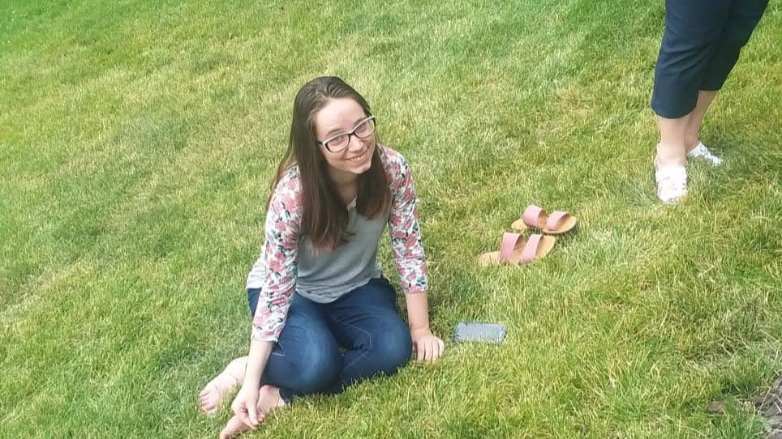

I'm a computer science major. I haven't decided exactly what I'd like for a career yet but I'd like to be able to work remote so I can be a stay at home mom. Web design could help me find a job that fits that criteria.
I'm from southern Utah and am the second oldest of six kids; I served a mission in London, and my hobbies are reading and writing.